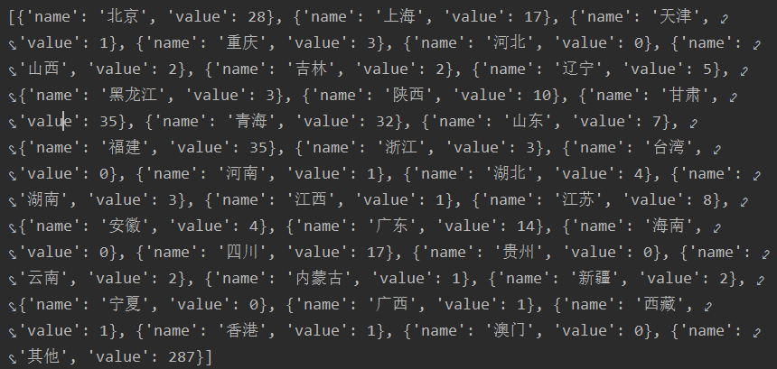

还未完成暂不开放，谢谢
最简单的一种就是wxpy自带的stats_text()函数，这个函数可以自动帮你分析你的好友，下面就用我的试试吧。
from wxpy import *
bot = Bot(cache_path=True)
my_friends = bot.friends()
print(my_friends.stats_text())
运行后结果显示如下：
TOP 10 省份
Tasmania: 73 (13.77%)
甘肃: 35 (6.60%)
福建: 35 (6.60%)
青海: 32 (6.04%)
北京: 28 (5.28%)
Victoria: 18 (3.40%)
四川: 17 (3.21%)
上海: 17 (3.21%)
广东: 14 (2.64%)
New South Wales: 11 (2.08%)
TOP 10 城市
Hobart: 70 (13.21%)
兰州市: 32 (6.04%)
西宁: 31 (5.85%)
Melbourne: 17 (3.21%)
成都: 16 (3.02%)
厦门: 15 (2.83%)
Sydney: 11 (2.08%)
海淀: 11 (2.08%)
福州: 10 (1.89%)
西安: 8 (1.51%)这样就可以很直观看到自己的好友组成比例，但是只有文字这样看起来好像有点枯燥，让我们做点改进。
下面我们利用matplotlib生成一个直方图。首先需要几个库
from wxpy import *
from matplotlib.font_manager import FontProperties
import matplotlib.pyplot as plot
bot = Bot(cache_path=True)
my_friends = bot.friends()
FontPath = 'C:\Windows\Fonts\simsun.ttc'
Font = FontProperties(fname=FontPath) # 这两步为了确保中文在图片能够正确显示。
all_dict = {} # 建立一个字典 内容为{地区：数量}
for friend in my_friends:
province = friend.province if friend.province.strip() else 'other'
if province in all_dict :
all_dict[province] += 1 # 地区存在+1
else:
all_dict[province] = 1 # 不存在则从1开始计数
plot.figure(1, figsize=[10, 6])
plot.title('\"%s\"的微信朋友地区分布' % bot.self.name,fontproperties=Font)
plot.xlabel('城市',fontproperties=Font) #x轴
plot.ylabel('人数',fontproperties=Font) #y轴
x = range(0, len(all_dict .keys()))
plot.bar(left=x,height=list(all_dict .values()),
align='center',)
plot.xticks(x, list(all_dict .keys()), rotation=90,fontproperties=Font)
for (x, key) in enumerate(all_dict .keys()):
plot.text(x - 0.25, all_dict [key] + 1.5, '%d' % all_dict [key], rotation=90,fontproperties=Font)
provinceDistImg = 'province.png'
plot.savefig(provinceDistImg)
plot.close('all')我们还有更炫酷的实现方法，和之前分析性别的Echart一样方便，只不过网址我们现在用不了，
那我们就自己写个html吧，具体的js文件我们可以用cdn，不需要特殊下载。
生成一个文件，改名为map.html,以记事本内容打开，将下面文件代码贴进去即可
效果如下
ECharts
上面这个地图是我的好友数量，那我们接下来就改成自己的吧。我们从刚才的html代码中k可以看到如下图部分，我们要做的就是 用自己的数据来替换
继续回到python代码再刚才后面加上这部分province_dict = {'北京': 0, '上海': 0, '天津': 0, '重庆': 0,
'河北': 0, '山西': 0, '吉林': 0, '辽宁': 0, '黑龙江': 0,
'陕西': 0, '甘肃': 0, '青海': 0, '山东': 0, '福建': 0,
'浙江': 0, '台湾': 0, '河南': 0, '湖北': 0, '湖南': 0,
'江西': 0, '江苏': 0, '安徽': 0, '广东': 0, '海南': 0,
'四川': 0, '贵州': 0, '云南': 0,
'内蒙古': 0, '新疆': 0, '宁夏': 0, '广西': 0, '西藏': 0,
'香港': 0, '澳门': 0, '其他': 0} # 生成省份的统计，由于是中国地图只有国内省份。
# 统计省份
for friend in my_friends:
if friend.province in province_dict.keys():
province_dict[friend.province] += 1
if friend.province not in province_dict.keys():
province_dict['其他'] += 1
# 生成JSON Array格式数据
data = []
for key, value in province_dict.items():
data.append({'name': key, 'value': value})
print(data)执行后会有如下显示：
那现在只要将自己的数据复制好然后替换到刚才的html代码中即可（注意开头和结尾的[和]不要复制）
我把这部分全部代码放到一起from wxpy import *
from matplotlib.font_manager import FontProperties
import matplotlib.pyplot as plot
bot = Bot(cache_path=True)
my_friends = bot.friends()
print(my_friends.stats_text())
FontPath = 'C:\Windows\Fonts\simsun.ttc'
Font = FontProperties(fname=FontPath)
def provinceDist(my_friends):
province_dict = {'北京': 0, '上海': 0, '天津': 0, '重庆': 0,
'河北': 0, '山西': 0, '吉林': 0, '辽宁': 0, '黑龙江': 0,
'陕西': 0, '甘肃': 0, '青海': 0, '山东': 0, '福建': 0,
'浙江': 0, '台湾': 0, '河南': 0, '湖北': 0, '湖南': 0,
'江西': 0, '江苏': 0, '安徽': 0, '广东': 0, '海南': 0,
'四川': 0, '贵州': 0, '云南': 0,
'内蒙古': 0, '新疆': 0, '宁夏': 0, '广西': 0, '西藏': 0,
'香港': 0, '澳门': 0, '其他': 0}
# 统计省份
for friend in my_friends:
if friend.province in province_dict.keys():
province_dict[friend.province] += 1
if friend.province not in province_dict.keys():
province_dict['其他'] += 1
# 生成JSON Array格式数据
data = []
for key, value in province_dict.items():
data.append({'name': key, 'value': value})
print(data)
all_dict = {}
for friend in my_friends:
province = friend.province if friend.province.strip() else 'other'
if province in all_dict :
all_dict[province] += 1
else:
all_dict[province] = 1
plot.figure(1, figsize=[10, 6])
plot.title('\"%s\"的微信朋友地区分布统计' % bot.self.name,fontproperties=Font)
plot.xlabel('城市',fontproperties=Font)
plot.ylabel('分布人数',fontproperties=Font)
x = range(0, len(all_dict .keys()))
plot.bar(left=x,height=list(all_dict .values()),
align='center',)
plot.xticks(x, list(all_dict .keys()), rotation=90,fontproperties=Font)
for (x, key) in enumerate(all_dict .keys()):
plot.text(x - 0.25, all_dict [key] + 1.5, '%d' % all_dict [key], rotation=90,fontproperties=Font)
provinceDistImg = 'province.png'
plot.savefig(provinceDistImg)
plot.close('all')
return provinceDistImg
if __name__ == '__main__':
provinceDist(my_friends)
那到此我们微信部分就全部结束了，各位小伙伴如果还有什么新奇的功能不用忘了和我分享哦！
代码在这里
还未完成暂不开放，谢谢

还未完成暂不开放，谢谢

还未完成暂不开放，谢谢
如果大家有什么建议或者建议请及时联系我我才能为大家做出更好的教程